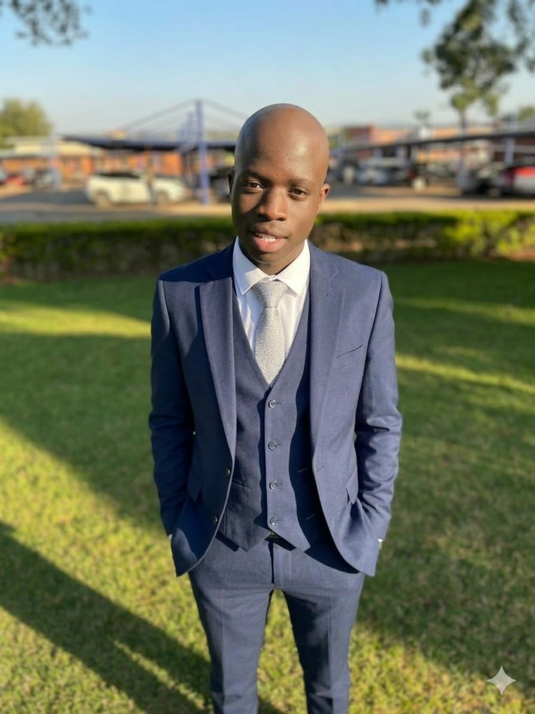

Welcome, I am
Mbaimbai Takalani
Ignitius
Mathematician | Programmer | Problem Solver
Bachelor of Mathematics and Computer Science student at the University of Venda, combining rigorous mathematical thinking with computer science innovation to solve real-world challenges.

About Me
I am a dedicated Mathematics and Computer Science student at the University of Venda, currently in my second year of study. I have a strong passion for problem-solving, analytical thinking, and applying mathematical concepts to real-world challenges.
Beyond academics, I founded Sigma Academy, a mathematics support and mentoring initiative where I built and led a small team — combining my passion for education with entrepreneurial thinking. I also collaborate with students from the University of Johannesburg, Wits, and the University of Limpopo on a development initiative building real-world, sustainable applications through problem-solving and system design.
Academic Background
University of Venda
Bachelor of Mathematics and Computer Science
2025 - 2026 (Second Year)
Pursuing advanced studies in mathematics and computer science with focus on problem-solving and algorithmic thinking.
Mulima Secondary School
National Senior Certificate (NSC)
Completed 2024
Achieved 74% average with 2 distinctions. Recognized as Top Student and ranked 1st in circuit on several occasions.
Academic Achievements
University of Venda
2026 (Second Year)
- Achieved a perfect score of 55/55 in Multivariable Calculus test
2025 (First Year)
First Semester:
- Achieved 4 distinctions out of 8 modules
- Maintained 75% overall average
- Ranked 4th in academic support academy
Second Semester:
- Achieved 5 distinctions out of 7 modules
- Maintained 80% overall average
Mulima Secondary School
- Final NSC average of 74%
- Obtained 2 distinctions
- Recognized as Top Student upon entry
- Awarded multiple academic certificates and medals
- Ranked 1st in circuit on several occasions
- Ranked 5th in circuit in Term 3 with 69% average
Olympiad
SATMO (South African Tertiary Mathematics Olympiad)
Competition Experience
Passionate participant in the South African Tertiary Mathematics Olympiad (SATMO), where I represented the University of Venda and challenged myself with complex problem-solving at a high level. This experience has sharpened my analytical thinking and deepened my appreciation for elegant mathematical solutions.
Key Areas
- Combinatorics - Counting and arrangement problems
- Number Theory - Properties of integers and primes
- Linear Algebra - Matrix theory and vector spaces
- Proof Writing - Rigorous mathematical arguments
Skills and Tools
Tools
Programming Languages
Web & Markup
Development Tools
Soft Skills
Career & Academic Goals
My goal is to become a skilled software developer while also growing as an entrepreneur, with a vision of transforming development initiatives into a company that builds impactful educational and everyday applications aimed at improving accessibility and making people's lives easier.
I am committed to finishing my degree with distinction and continuing my educational journey by pursuing further learning opportunities. I believe in the power of continuous learning and development, whether through advanced certifications, specialized courses, or collaborative projects that push my technical and analytical capabilities.
GitHub Projects
Loading projects...
Get In Touch
I'm always open to new opportunities, collaborations, and conversations. Feel free to reach out!